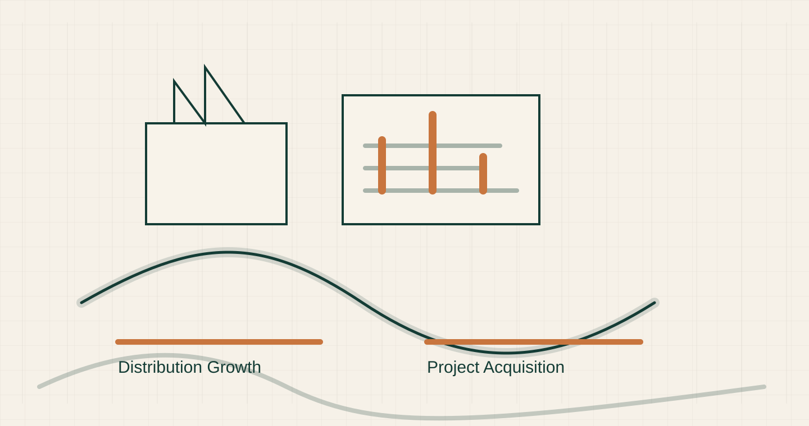
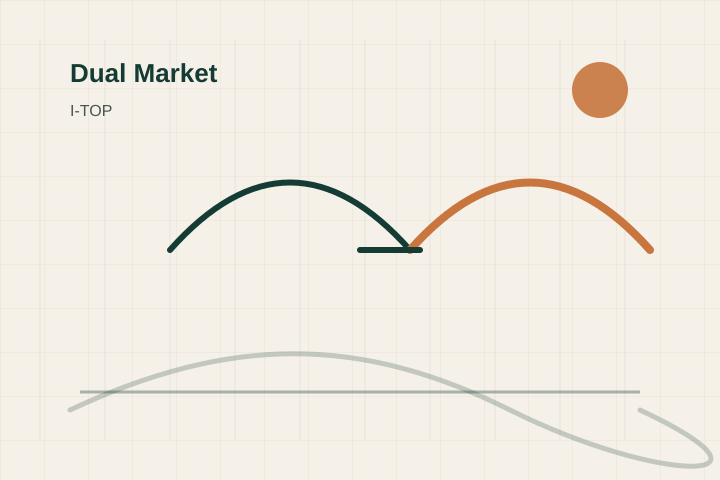

01
Executive Case
لماذا نحتاج منظومة تسويق؟
توضيح الفجوة بين قدرات المصنع والكتالوجات المتاحة وبين ظهورها الرقمي، ولماذا يجب تحويل التسويق إلى نظام مبيعات قابل للقياس.
مركز تحول النمو والتسويق لشركة I-TOP Therm
عرض تنفيذي لبناء قسم تسويق يقود التوزيع والمشاريع والحضور الرقمي لشركة I-TOP Therm.

قوة المصنع يجب أن تظهر كأدلة فنية وتجارية.
ربحية الموزعين، التوفر، سرعة الحركة، التغطية الجغرافية.
اعتمادات، مواصفات، RFQ، BOQ، مكتبة فنية، وثقة مشاريع.
Executive Modules
Executive Case
توضيح الفجوة بين قدرات المصنع والكتالوجات المتاحة وبين ظهورها الرقمي، ولماذا يجب تحويل التسويق إلى نظام مبيعات قابل للقياس.

Dual Market Model
فصل الاستراتيجية إلى مسارين: التوزيع والريتيل من جهة، والمشاريع والاستشاريين من جهة أخرى.

Digital Infrastructure
تطوير الموقع ليصبح منصة هندسية وتجارية تدعم RFQ، الكتالوجات، الاعتمادات، والموزعين.

SEO Growth Engine
بناء منظومة SEO تستهدف كلمات PP-R وUPVC وCPVC وHDPE وتحوّل البحث إلى طلبات عروض أسعار.

Keyword Strategy
تحديد الكلمات الفنية والتجارية لكل منتج وكل شريحة: موزعين، مقاولين، استشاريين، ومشاريع.

Social & LinkedIn System
بناء حضور صناعي يضع I-TOP أمام الاستشاريين والمقاولين والموزعين بلغة تقنية وتجارية واضحة.

Paid Lead Generation
إعداد حملات Google ووسائل التواصل لاستهداف العملاء المحتملين وفتح فرص بيع جديدة.

Brand Positioning
تحويل I-TOP من مصنع منتجات إلى شريك حلول موثوق للمشاريع ومصدر ربح للموزعين.

Product Marketing
تحويل كل منتج إلى عرض واضح: مواصفة، استخدام، قيمة، مقارنة، وسبب اختيار.

Content & Media System
إنتاج محتوى تسويقي وفني يوثق المصنع، المنتجات، الاختبارات، الاعتمادات، والمشاريع.

Retail Distribution Growth
بناء برنامج موزعين وتجار يركز على التوفر، الربحية، المناطق، نقاط البيع، وسرعة السحب.

Projects Acquisition
بناء مسار واضح للمقاولين والاستشاريين يشمل الاعتمادات، BOQ، RFQ، والمكتبة الفنية.

CRM & KPI Dashboard
ربط التسويق بالمبيعات عبر CRM ولوحة قياس تقيس RFQ، BOQ، الموزعين، المشاريع، والإيرادات المتأثرة.

Marketing Department Roadmap
تصميم قسم تسويق قابل للتنفيذ مع أدوار واضحة وخطة 30 / 60 / 90 يوم.

Executive Recommendation
قرار الإدارة المطلوب: اعتماد منظومة تسويق تقود التوزيع والمشاريع عبر موقع، محتوى، CRM، ومؤشرات أداء.